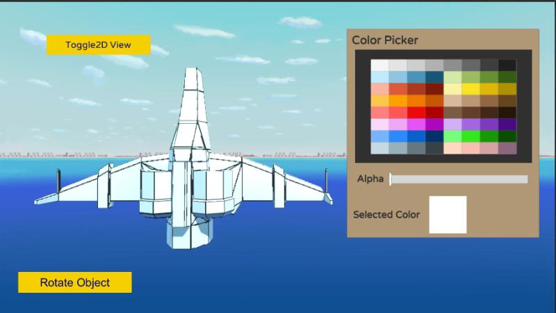
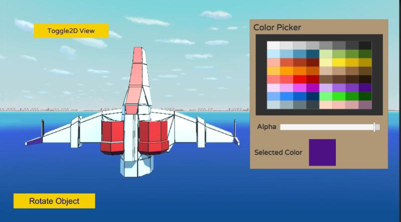
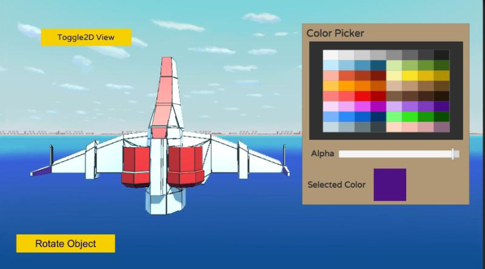
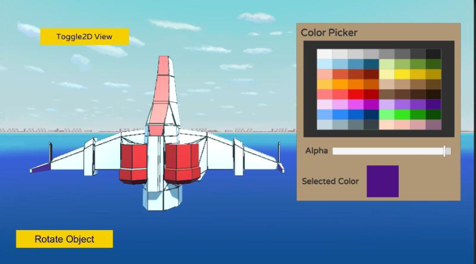

Grid Color Craze
View game


 


Description
A simple painting game made as an assignment during the first month my internship at Narsun Studios. The game is designed to paint the 2d texture having UV map of the object to be painted. The user paints the UV map of the object and the object gets painted automatically in the 3d View. The unwrapping of the texture was an intense but rewarding experience.
Features
- 2D Texture Painting: Users can paint directly on a UV map of the 3D object.
- Real-time 3D Update: The painted texture is automatically applied to the 3D object in real time.
- Custom UV Unwrapping: The game involves manually unwrapping textures for accurate mapping.
- User-friendly Painting Tools: Different brush sizes, colors, and possibly an eraser tool for corrections.
- Interactive 3D Preview: The object updates dynamically, allowing users to see their artwork from different angles.
- Texture Saving and Loading: Users can save their painted textures and load them later.
- Performance Optimized Workflow: Handling texture painting efficiently to ensure smooth rendering.
- Internship Project at Narsun Studios: Developed as part of your first-month assignment, focusing on technical skills like UV mapping and texture application.
Technologies Used
- Unity
- C#
- ProBuilder
- UVMapping
- Texture Painting